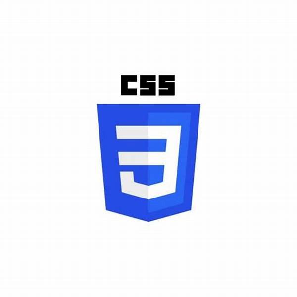

My Work
Here are some of my projects and past work experiences.

HTML Developer (Fresher)
Basic HTML projects with structured layouts and semantic coding.

CSS Developer (Fresher)
Designed responsive layouts with modern CSS techniques.
Java Developer (Fresher)
Built simple Java projects and backend logic.
C Developer (Fresher)
Practiced algorithms and logic building using C language.